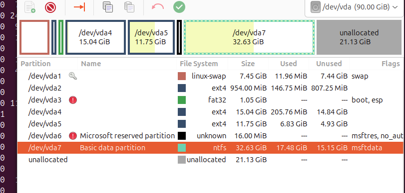

2 Teoría de las instalaciones¶
Punto 2 de Teoría del Tema 2.
1. Tipos de formatos de datos. Particiones y Volúmenes¶
1.1 Formatos más comunes en Windows¶
- FAT16 (File Allocation Table 16 bits)
El FAT16 fue uno de los primeros sistemas de archivos ampliamente usados en computadoras personales. Se utilizó principalmente en disquetes y en las primeras versiones de Windows y MS-DOS. Estaba pensado para discos de pequeña capacidad y, por limitaciones de diseño, solo podía manejar particiones de hasta 2 GB. Si bien en su momento fue fundamental para la gestión de datos en sistemas antiguos, hoy en día se considera completamente obsoleto y ha sido reemplazado por formatos más eficientes y compatibles con discos modernos. - FAT32
El FAT32 surgió como una evolución del FAT16, con mejoras en eficiencia y en la capacidad de manejar discos más grandes. Gracias a su simplicidad y a la amplia compatibilidad, se convirtió en el formato estándar para memorias USB, cámaras digitales, consolas y otros dispositivos portátiles. Una de sus principales ventajas es que prácticamente cualquier sistema operativo puede leerlo y escribir en él. Sin embargo, tiene una limitación importante: no permite almacenar archivos individuales de más de 4 GB, lo cual lo hace poco práctico para videos de alta definición, copias de seguridad completas o imágenes de disco grandes. - exFAT (Extended FAT)
El exFAT (Extended FAT) fue diseñado posteriormente para superar esa restricción. Mantiene la compatibilidad con múltiples plataformas y dispositivos, pero elimina la limitación de tamaño de archivo, permitiendo manejar archivos muy grandes y particiones de varios terabytes. Por eso, es el formato más utilizado en memorias USB y discos externos modernos, especialmente cuando se necesita transferir información entre Windows, macOS y otros sistemas. - NTFS (New Technology File System)
El NTFS (New Technology File System) se convirtió en el formato estándar de Windows a partir de Windows XP y sigue siéndolo en las versiones actuales. Está diseñado para manejar archivos de gran tamaño y discos duros de varios terabytes, lo que lo hace muy eficiente en equipos modernos. A diferencia de FAT32 y exFAT, NTFS incorpora funciones avanzadas de seguridad, como permisos de acceso detallados, cifrado de datos y compresión de archivos, además de soportar journaling para reducir el riesgo de corrupción en caso de fallos. Su principal desventaja radica en la compatibilidad: aunque macOS puede leer particiones NTFS de forma nativa, no permite escribir en ellas sin software adicional, y en sistemas Linux se necesita soporte específico para trabajar con él.
1.2. Formatos en macOS (No los usaremos pero saber que existen)¶
- HFS+ (Hierarchical File System Plus)
El HFS+ (Hierarchical File System Plus) fue durante muchos años el sistema de archivos principal en macOS, desde finales de los noventa hasta la llegada de APFS en 2017. Permitía manejar archivos de gran tamaño e incluía funciones avanzadas para su época, como el journaling, que ayudaba a proteger la integridad de los datos en caso de apagados inesperados. Aunque fue un formato muy estable y ampliamente usado en discos duros mecánicos, hoy en día se encuentra en desuso y ha sido reemplazado casi por completo por APFS, especialmente en equipos con unidades de estado sólido (SSD). - APFS (Apple File System)
El APFS (Apple File System) es el sistema de archivos actual de macOS, introducido en 2017 para reemplazar a HFS+. Fue diseñado específicamente para aprovechar al máximo la velocidad y características de los discos de estado sólido (SSD), aunque también funciona en discos duros tradicionales. Destaca por su gran rapidez y por incluir funciones modernas como la clonación instantánea de archivos y carpetas, la creación de snapshots para restaurar el sistema en un estado anterior y un cifrado avanzado que mejora la seguridad de los datos. Su principal limitación es la compatibilidad: aunque es ideal dentro del ecosistema de Apple, no puede ser utilizado de forma nativa en Windows, lo que lo hace menos práctico en entornos donde se intercambian datos entre distintos sistemas operativos.
1.3. Formatos en Linux¶
- ext2, ext3, ext4 (Extended File System)
El ext4 (Fourth Extended File System) es actualmente el sistema de archivos más utilizado en Linux y se considera el estándar en la mayoría de distribuciones. Está diseñado para manejar discos y archivos de gran tamaño, lo que lo hace adecuado tanto para equipos personales como para entornos de servidores. Destaca por su estabilidad, eficiencia y capacidad de recuperación frente a fallos, gracias al uso de journaling, que protege la integridad de los datos. Su rendimiento está optimizado para cargas de trabajo intensivas y, aunque es muy confiable en Linux, presenta una limitación importante en términos de compatibilidad: Windows no puede reconocer particiones ext4 de forma nativa, siendo necesario instalar software adicional para acceder a ellas. - Btrfs (B-tree File System)
El Btrfs (B-tree File System) es un sistema de archivos moderno para Linux, desarrollado con el objetivo de ofrecer características avanzadas que van más allá de lo que proporciona ext4. Entre sus funciones más destacadas se encuentran la posibilidad de crear snapshots (copias instantáneas del estado del sistema). Sin embargo, aunque es potente y sigue en desarrollo, todavía se considera menos estable que ext4 en ciertas aplicaciones críticas, por lo que suele recomendarse principalmente para pruebas - XFS y ZFS
XFS y ZFS son sistemas de archivos orientados principalmente a entornos de servidores y a la gestión de grandes volúmenes de datos. El XFS, desarrollado originalmente por Silicon Graphics, es reconocido por su alto rendimiento en el manejo de archivos de gran tamaño y su capacidad para trabajar eficientemente en sistemas con cargas intensivas de entrada y salida. Es muy utilizado en centros de datos y aplicaciones donde la velocidad y la escalabilidad son esenciales. Por otro lado, el ZFS (Zettabyte File System) destaca por su enfoque en la confiabilidad y la integridad de los datos. Incorpora un sistema de verificación mediante sumas de comprobación (checksums)
2.¿Qué es una partición?¶
Una partición es una división lógica dentro de un disco duro, SSD o memoria externa, que permite organizar y utilizar el espacio de almacenamiento de manera independiente. Para entenderlo mejor, se puede imaginar el disco como un terreno vacío, y las particiones como parcelas delimitadas dentro de ese terreno. Cada partición funciona de forma autónoma y puede destinarse a diferentes propósitos: desde instalar un sistema operativo hasta almacenar archivos o incluso servir como espacio reservado para recuperación.
Por ejemplo, en una computadora es común encontrar varias particiones en un mismo disco: la unidad C, donde está instalado Windows; otra partición, como la unidad D, destinada a documentos, programas o juegos; y, en muchos casos, una partición oculta, utilizada por el fabricante para guardar herramientas de recuperación del sistema.

¿Cuantas particiones hay en la foto anterior?
2.1 Tipos de particiones¶
Recordarmos que: Un sector es la unidad mínima de almacenamiento físico en un disco. Tradicionalmente, un sector equivale a 512 bytes, aunque en los discos modernos se utilizan sectores de 4 KB (Advanced Format) para aprovechar mejor la capacidad.
1-En los discos que utilizan el esquema MBR (Master Boot Record), las particiones primarias son las más básicas. El MBR (Master Boot Record) fue creado en 1983 junto con la llegada del IBM PC AT y los primeros discos duros de apenas 10 MB.
- En este esquema, la tabla de particiones se almacena en el primer sector del disco (sector 0), junto con un pequeño código de arranque, y permite definir hasta cuatro particiones primarias capaces de albergar directamente sistemas operativos o datos. En sus inicios esta limitación no representaba un problema, pero con el crecimiento de la capacidad de los discos se volvió insuficiente. Aunque aún es posible encontrar MBR en discos antiguos o en algunos dispositivos de almacenamiento extraíbles, en los sistemas modernos ha quedado prácticamente en desuso y ha sido reemplazado por GPT. Para superar esa restricción de solo cuatro particiones, en MBR se creó la partición extendida. A diferencia de las primarias, esta no almacena datos directamente, sino que actúa como un contenedor dentro del cual se pueden crear múltiples particiones adicionales llamadas lógicas. De este modo, el usuario podía tener más de cuatro áreas de almacenamiento en un mismo disco. Este recurso fue útil durante muchos años, pero con la llegada de GPT perdió relevancia y actualmente también está en desuso.
2-Con el tiempo, la capacidad de los discos creció de forma exponencial: A finales de los 90 y principios de los 2000 aparecieron discos de cientos de GB y luego de varios terabytes. MBR se volvió insuficiente porque: Solo soporta discos de hasta 2 TB, solo permite 4 particiones primarias y se basa en un único sector, lo que lo hace muy vulnerable. Para superar esas limitaciones, Intel desarrolló el estándar EFI (Extensible Firmware Interface), que luego evolucionó en UEFI. Este nuevo firmware requería un esquema de particionado moderno y flexible: así nació el GPT (GUID Partition Table). GPT distribuye la información de forma redundante y flexible:
Con UEFI, el firmware ya no depende de ese único sector:
- Utiliza una partición especial llamada ESP (EFI System Partition) con formato FAT32 (para ser universalmente reconocido por UEFI).
- Esa partición EFI es independiente del sistema operativo y contiene pequeños programas llamados bootloaders que permiten arrancar distintos sistemas (Windows, Linux, etc.).
- De esta forma, con GPT no existe la distinción entre primarias, extendidas y lógicas: todas las particiones se gestionan como primarias y el límite ya no es de cuatro, sino de hasta 128 particiones por defecto, con la posibilidad de ampliarlo. Esta simplicidad hace que GPT sea hoy el estándar en sistemas modernos, reemplazando por completo al esquema MBR.
- Ojo, UEFI incorpora un "modo de compatibilidad con BIOS". Este modo permite arrancar sistemas operativos antiguos que todavía dependen de MBR. Esto sucede ya que en el Sector 0 se sigue guardando un MBR de protección. Esto existe solo para que software antiguo no crea que el disco está vacío. En resumen, GPT tiene los siguientes sectores específicos, que denominaremos "LBA's"
- LBA 0 : “MBR protector” comentado ya. LBA 1 : Cabecera GPT primaria (metadatos: GUID del disco, ubicación de tabla de particiones, etc.). LBA 2 al 33 : Describe las particiones GPT (cada descripcion de la partición ocupa 128 bytes luego podemos tener hasta 4 particiones descritas en un solo sector (ya que un solo sector ocupara 512Bytes y 512Bytes/128Bytes=4). Como el espacio reservado para descripcion de particiones es de 16KB en total, podemos tener tantos LBA como 16KB/512Bytes=32 LBA's para partciones, donde cada LBA representa 4 particiones y por tanto podemos tener hasta 128 particiones. LBA 34 : Aquí empiezan las particiones reales (ESP, /boot, /, Windows, etc.), que es lo que ves en Gparted cuando hacéis las prácticas.
- Los sectores reservados para GPT (LBA0, LBA1, LBA2–33, cabecera de backup al final) son metadatos internos del disco, no particiones. Nunca los veras en la tabla de particiones. Cuando enciendes el ordenador, lo primero que se ejecuta es el firmware UEFI. Este firmware sabe leer discos con particionado GPT, así que consulta los primeros sectores (los LBAs iniciales), donde encuentra la tabla GPT. Esa tabla es simplemente un mapa que le dice dónde empieza y acaba cada partición. Gracias a esa información, UEFI localiza la partición especial llamada ESP, que siempre está en formato FAT32. UEFI entra en la ESP y busca un bootloader, que es un archivo
.efi. Según la configuración de arranque (BootOrder), puede elegir el de Ubuntu (Ubuntu64.efi) o el de Windows (bootmgfw.efi). Si ejecuta Ubuntu es posible que se ejecute GRUB, entonces el control pasa a GRUB. GRUB ya sabe leer las demás particiones del disco (por ejemplo, la partición/booten ext4 o incluso la de Windows) por lo que el proceso de arranque terminar correctamente
2.2 Relación de las particiones con los formatos de datos. Un pequeño resumen¶
Aquí entra en juego el sistema de archivos (FAT32, NTFS, ext4, etc.):
1-Una partición sin formato no puede usarse.
Cuando se adquiere un disco nuevo, este llega completamente “en bruto”, es decir, sin ningún tipo de organización interna. Para poder utilizarlo y almacenar información, es necesario formatearlo con un sistema de archivos.
2-El formato define cómo se almacenan y organizan los datos en esa partición.
Por ejemplo, si una partición se formatea en NTFS, será posible aprovechar funciones avanzadas como la gestión de permisos de usuario y el soporte para archivos de gran tamaño. En cambio, si esa misma partición se formatea en FAT32, ganará en compatibilidad con una amplia variedad de dispositivos y sistemas operativos, aunque tendrá la limitación de no poder almacenar archivos que superen los 4 GB
3-Cada partición puede tener un formato distinto.
En un mismo disco es posible combinar diferentes sistemas de archivos según las necesidades. Por ejemplo, se puede crear una partición en NTFS para ejecutar Windows, otra en ext4 destinada a Linux y una tercera en exFAT, pensada para facilitar el intercambio de archivos entre ambos sistemas operativos gracias a su amplia compatibilidad.
4-El formato no cambia el tamaño de la partición, solo cómo se usan los datos dentro.
La partición puede entenderse como el recipiente que delimita un espacio dentro del disco, mientras que el formato actúa como la regla de organización que determina cómo se almacenan y gestionan los datos dentro de ese espacio.